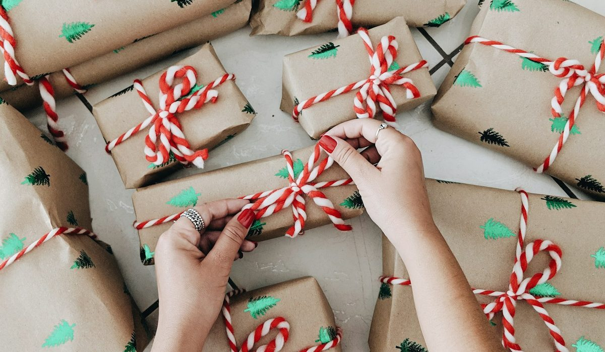

En bref
Pour un cadeau mode premium, le budget le plus sûr se situe entre 100 et 200 €, noté 8,8/10 dans notre grille. Il ouvre l'accès à une écharpe en laine et cachemire, une petite maroquinerie en cuir ou une pochette de créateur, sans question de taille. Sous 100 €, on reste sur l'accessoire. Au-delà de 400 €, on entre dans le sac en cuir, qui demande de bien connaître les goûts de la personne.
- Entre 100 et 200 €, 6 cadeaux mode sur 10 se jouent sans aucune question de taille
- Un sac en cuir de maison française démarre autour de 295 € et dépasse souvent 400 €
- Une carte cadeau est valable au moins un an chez la plupart des marques premium
- Le délai de retour type va de 14 à 30 jours, souvent prolongé en période de fêtes
- À plusieurs, une cagnotte de 25 à 40 € par personne suffit pour viser un sac en cuir
Sommaire de ce guide
Combien dépenser selon le lien avec la personne
Le bon budget dépend moins de l'occasion que du lien. On ne met pas la même somme pour une collègue que pour une sœur, et c'est très bien ainsi. Un cadeau trop cher met mal à l'aise autant qu'un cadeau négligé.
| Lien | Fourchette courante | Ce que l'on offre | Le piège |
|---|---|---|---|
| Conjointe | 180 à 450 € | Sac, bijou, pièce en soie ou en cachemire | Le vêtement ajusté, quand on n'est pas sûr de la taille |
| Mère | 120 à 280 € | Écharpe, sac de jour, carré de soie | Une couleur trop jeune ou trop sage |
| Sœur, amie proche | 70 à 190 € | Pochette, foulard, petite maroquinerie | Copier son style au lieu de le compléter |
| Belle-famille | 60 à 140 € | Accessoire en laine, gants, trousse | La pièce trop personnelle |
| Collègue | 25 à 45 € par personne | Participation à un cadeau commun | Le cadeau individuel qui dépasse les autres |
Ordres de grandeur constatés sur les dépenses de cadeaux mode en France, hors bijouterie fine.
La fourchette de la conjointe est la plus large, parce qu'elle mélange deux logiques. Un anniversaire de couple se tient autour de 200 €, un cadeau pour les 40 ans se rapproche de 450 €. Entre sœurs et amies, l'usage veut qu'on reste dans une somme qu'on pourra recevoir en retour sans gêne.
Ce que chaque tranche achète vraiment
Le tableau classe six options, les quatre tranches de prix, la carte cadeau et le cadeau à plusieurs. La note ne récompense pas la somme dépensée, elle mesure la chance que le cadeau soit porté.
| Budget | Note /10 | Type de pièces | Exemples génériques | Pour qui | Risque de se tromper |
|---|---|---|---|---|---|
| 100 à 200 €Notre choix | 8,8 | Accessoires et petite maroquinerie | Écharpe laine et cachemire, pochette, porte-cartes en cuir, cabas en toile | Une mère, une sœur, une amie proche | Faible |
| 200 à 400 € | 8,4 | Maroquinerie et pièces de prêt-à-porter | Cabas en cuir, petit sac bandoulière, blouse en soie, mocassins | Une conjointe, un anniversaire rond | Moyen, taille ou goût |
| Carte cadeau | 8,1 | Montant libre, choix laissé à la personne | Carte de 75 à 300 € chez une maison de mode | Quelqu'un dont on ignore la taille | Très faible |
| Moins de 100 € | 7,9 | Petits accessoires | Bonnet, gants en cuir, foulard, trousse, charm de sac | Une collègue, une belle-sœur, un cadeau d'appoint | Faible |
| Cadeau à plusieurs | 7,6 | Pièce forte financée en commun | Sac en cuir, manteau, bijou en or | Un départ en retraite, une naissance | Moyen, goût |
| Plus de 400 € | 7,2 | Sac en cuir, manteau, pièce d'exception | Sac porté épaule en cuir, manteau en drap de laine, bottes | Une conjointe dont on connaît les goûts | Élevé, goût et taille |
Fourchettes relevées sur les gammes premium françaises, hors soldes. Note selon la probabilité de plaire, le risque de taille et de goût, la qualité perçue au prix et la facilité d'échange. Notes et prix, relevé de démonstration du 1er octobre 2026.

Sous 100 €, la mode premium se limite aux accessoires. Un bonnet en laine, une paire de gants en cuir doublés, une trousse en toile ou un charm de sac. C'est parfait pour un cadeau d'appoint, un peu court pour un anniversaire important.
Entre 100 et 200 €, tout change. On accède à l'écharpe en laine et cachemire, au porte-cartes en cuir pleine fleur, au cabas en toile de coton épaisse. Un Pliage de Longchamp en taille moyenne entre dans cette tranche, comme la plupart des accessoires en maille de Sézane. Aucune taille à deviner, une vraie qualité au toucher.
Entre 200 et 400 €, la maroquinerie arrive. Un cabas en cuir de vachette, un petit sac bandoulière, des mocassins en cuir souple. Les sacs de Polène démarrent dans cette zone. Le risque monte d'un cran, parce qu'un sac se choisit autant qu'une paire de chaussures. Au-delà de 400 €, réservez la somme à quelqu'un dont vous connaissez la garde-robe par cœur.
Anniversaire, Noël, naissance, départ en retraite
Un anniversaire
C'est l'occasion où l'on peut viser juste, parce qu'on offre à une seule personne. Prévoyez 120 à 250 € pour une proche et 300 € ou plus pour un anniversaire rond. La petite maroquinerie gravée à ses initiales marche très bien à 30, 40 ou 50 ans.
Noël
Le budget se répartit sur plusieurs personnes, il baisse donc par tête. Comptez 60 à 150 € par femme de la famille, et pensez aux accessoires d'hiver, écharpes, gants, bonnets, qui tombent au bon moment. Commandez avant le 10 décembre pour éviter les ruptures sur les coloris classiques.
Une naissance
Le cadeau mode pour la jeune mère est souvent plus apprécié que le dixième body. Un grand cabas en toile qui sert de sac à langer chic, autour de 160 à 250 €, ou un cardigan ample en mérinos. Évitez le vêtement ajusté, la silhouette change pendant plusieurs mois.
Un départ en retraite
C'est le cadeau à plusieurs par excellence. Avec 15 à 20 participants à 25 ou 30 €, on réunit 400 à 600 €, de quoi offrir un sac en cuir de belle maison ou un manteau. Faites choisir le coloris par une collègue proche, ou glissez une carte cadeau du même montant dans un écrin.
Offrir sans connaître la taille
Le vêtement ajusté est le cadeau le plus risqué. Une taille sur trois ne tombe pas juste quand on offre un pantalon ou une veste sans essai. Voici comment s'en sortir.
- Restez sur les pièces sans taille, sacs, écharpes, foulards, petite maroquinerie et bijoux fantaisie.
- Pour la maille, choisissez une coupe ample, un cardigan ou un pull oversize pardonne une taille d'écart.
- Regardez discrètement l'étiquette d'une pièce qu'elle porte souvent, en notant la marque, car les grilles diffèrent d'une maison à l'autre.
- Pour les chaussures, ne tentez rien sans pointure confirmée, et même avec, préférez des mocassins ou des ballerines plutôt que des bottes.
- Si le doute persiste, la carte cadeau accompagnée d'une pièce plus petite, un foulard ou un porte-cartes, garde l'effet de surprise.
La pièce qu'on offre sans connaître la taille finit dans un placard une fois sur trois. Un sac, jamais.
Carte cadeau, emballage et retours
La carte cadeau, une vraie option
Elle a longtemps passé pour un cadeau sans effort. C'est injuste. Chez une maison de mode premium, une carte de 150 à 300 € offre un vrai choix, sans erreur de taille. Vérifiez la durée de validité, souvent un an, et si elle s'utilise en ligne comme en boutique. Glissez-la dans une enveloppe avec un mot écrit à la main.
L'emballage fait la moitié du cadeau
La plupart des marques premium proposent un emballage cadeau en ligne, gratuit ou à quelques euros. Demandez-le, et demandez aussi que la facture ne soit pas jointe au colis. Pour un sac, gardez le dust bag en tissu, il protège le cuir et signale la qualité dès l'ouverture.
Les retours et les échanges
Le délai de retour habituel va de 14 à 30 jours, et beaucoup de maisons le prolongent jusqu'à mi-janvier pour les achats de fin d'année. Joignez un ticket cadeau sans prix si la marque le propose. Et vérifiez que l'échange se fait en boutique, c'est bien plus simple pour la personne qui reçoit.
Comment choisir selon la personne
Si elle a déjà tout
Visez la pièce qu'on ne s'offre pas soi-même, une écharpe en cachemire ou des gants en cuir doublés de soie, entre 120 et 200 €. Le luxe discret plaît plus que l'objet voyant.
Si elle suit la mode de près
Ne devinez pas la tendance, elle l'a déjà repérée. Une carte cadeau de 200 € chez sa marque préférée vaut mieux qu'un sac choisi à sa place.
Si elle est pratique avant tout
Un cabas solide ou un sac de travail qui accueille un ordinateur, entre 180 et 350 €. Elle le portera cinq jours sur sept, et c'est le meilleur compliment qu'un cadeau puisse recevoir.
Si vous la connaissez peu
Restez sous 100 €, sur un accessoire en laine ou un foulard dans une couleur neutre. Moins c'est personnel, moins le risque est grand.
Notre verdict
Pour un cadeau mode premium, la tranche de 100 à 200 € est la plus sûre, notée 8,8/10. Elle achète une vraie qualité, écharpe en laine et cachemire, petite maroquinerie en cuir, cabas en toile, sans jamais poser la question de la taille. Au-delà de 400 €, réservez le budget à quelqu'un dont vous connaissez les goûts.
Si votre priorité est de ne pas vous tromper, prenez une carte cadeau et ajoutez un petit accessoire. Si votre priorité est l'effet, prenez un sac en cuir à plusieurs. Si vous offrez à une collègue, restez sous 45 € par personne et passez par un cadeau commun.
Questions fréquentes
Quel budget prévoir pour un cadeau mode premium ?
Pour un cadeau mode premium, la tranche la plus sûre va de 100 à 200 €. Elle couvre une écharpe en laine et cachemire, une pochette ou une petite maroquinerie en cuir, sans question de taille. Un sac en cuir de maison française démarre autour de 295 € et dépasse souvent 400 €.
Combien dépenser pour un cadeau à sa conjointe ?
Pour un cadeau à sa conjointe, la fourchette courante va de 180 à 450 €. Un anniversaire de couple se tient autour de 200 €, un anniversaire rond se rapproche de 450 €, souvent pour un sac en cuir ou une pièce en cachemire.
Est-ce qu'une carte cadeau est un bon cadeau mode ?
Oui, une carte cadeau de 150 à 300 € chez une maison de mode premium offre un vrai choix et supprime le risque de taille. Elle reste valable au moins un an chez la plupart des marques. Ajoutez un petit accessoire pour garder l'effet de surprise.
Que faire si on ne connaît pas sa taille ?
Sans connaître la taille, restez sur les pièces sans taille, sac, écharpe, foulard ou petite maroquinerie, entre 100 et 400 €. Pour la maille, une coupe ample pardonne une taille d'écart. Les chaussures et les pantalons demandent une pointure ou une taille confirmée.
Combien donner pour un cadeau de départ en retraite ?
Pour un cadeau commun de départ en retraite, la participation courante va de 25 à 30 € par personne. Avec 15 à 20 participants, on réunit 400 à 600 €, de quoi offrir un sac en cuir de belle maison ou un manteau en drap de laine.
Comment sont notées les options de budget ?
Chaque option de budget est notée sur quatre critères, la probabilité de plaire (35 %), le risque de taille et de goût (30 %), la qualité perçue au prix (20 %) et la facilité d'échange (15 %). Les fourchettes viennent des gammes premium françaises hors soldes, en relevé de démonstration du 1er octobre 2026.
Notre méthode
Ce classement repose sur des relevés faits sur les sites officiels et en boutique, refaits chaque mois.
- Les prix sont relevés sur les sites officiels des marques en France, hors soldes et hors code promo, à la date indiquée
- Les matières, l'origine de fabrication et les dimensions sont celles affichées sur les fiches produit
- Chaque sac est porté et rempli en conditions réelles, ordinateur, trousse, gourde et parapluie compris
- Les avis clients vérifiés sont lus un par un sur la tenue des anses, des coins et des finitions
- Les services (livraison, retours, réparation, seconde main) sont testés sur une commande réelle par marque